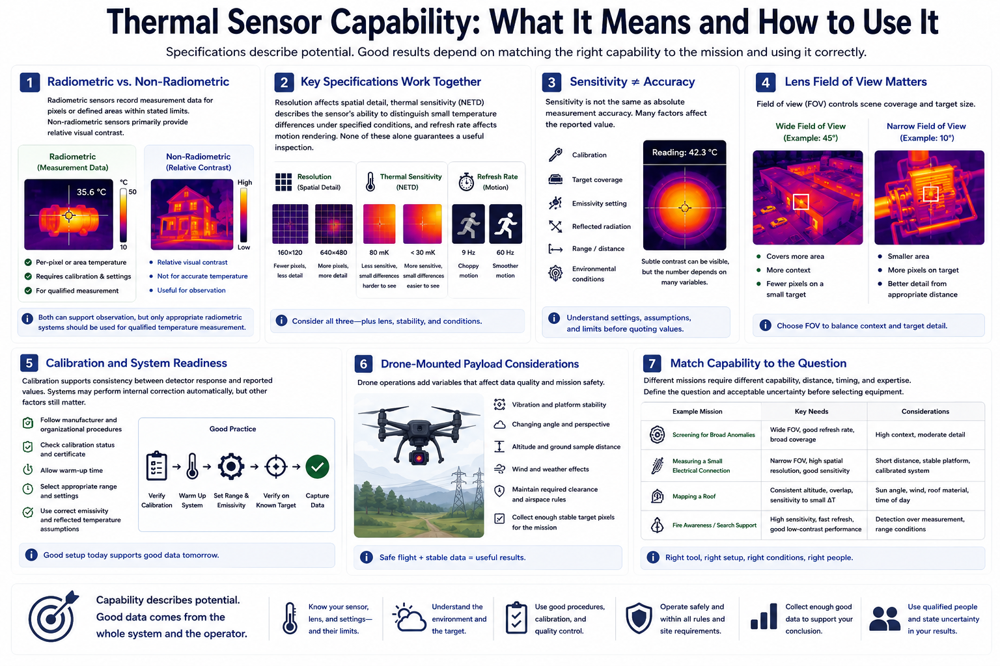

Sensor Types and Capabilities
Connecting to LMS... Progress: in progress

Narration
Radiometric thermal sensors record measurement data for pixels or defined areas within stated limits. Non-radiometric sensors primarily provide relative visual contrast. Both can support observation, but only appropriate radiometric systems should be used for qualified temperature measurement.
Resolution affects spatial detail, while thermal sensitivity describes the sensor's ability to distinguish small temperature differences under specified conditions. Refresh rate affects motion rendering. None of these specifications alone guarantees a useful inspection.
Sensitivity is not the same as absolute measurement accuracy. A sensor may display subtle contrast while the numerical value still depends on calibration, target coverage, emissivity assumptions, reflected radiation, range, and environmental conditions.
Lens field of view controls scene coverage and target size. A wider view covers more area but places fewer pixels on a small target. A narrower view can improve target detail from an appropriate distance while reducing context.
Calibration supports consistency between detector response and reported values. Some systems perform internal correction automatically, but calibration status, warm-up, range, and environmental assumptions still matter. Follow manufacturer and organizational procedures.
Drone-mounted payloads add vibration, movement, changing angle, altitude, wind, and flight-safety constraints. The aircraft must carry the payload safely, preserve required clearance, and collect enough stable target pixels for the mission.
Match capability to the question. Screening for broad anomalies, measuring a small electrical connection, mapping a roof, and supporting fire awareness have different sensor, lens, distance, timing, and expertise requirements. Define acceptable uncertainty before selecting equipment.